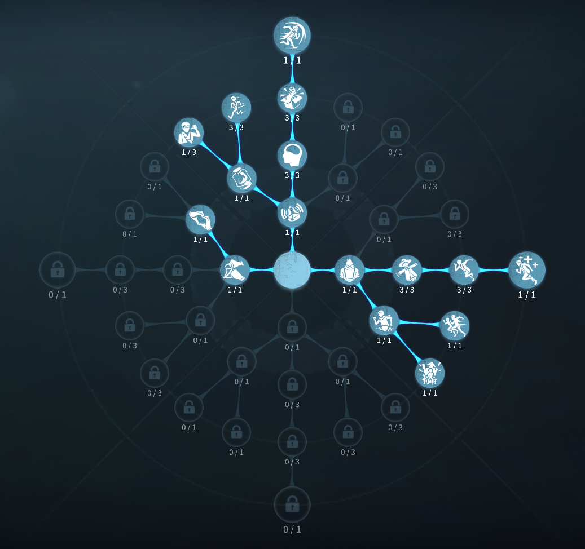
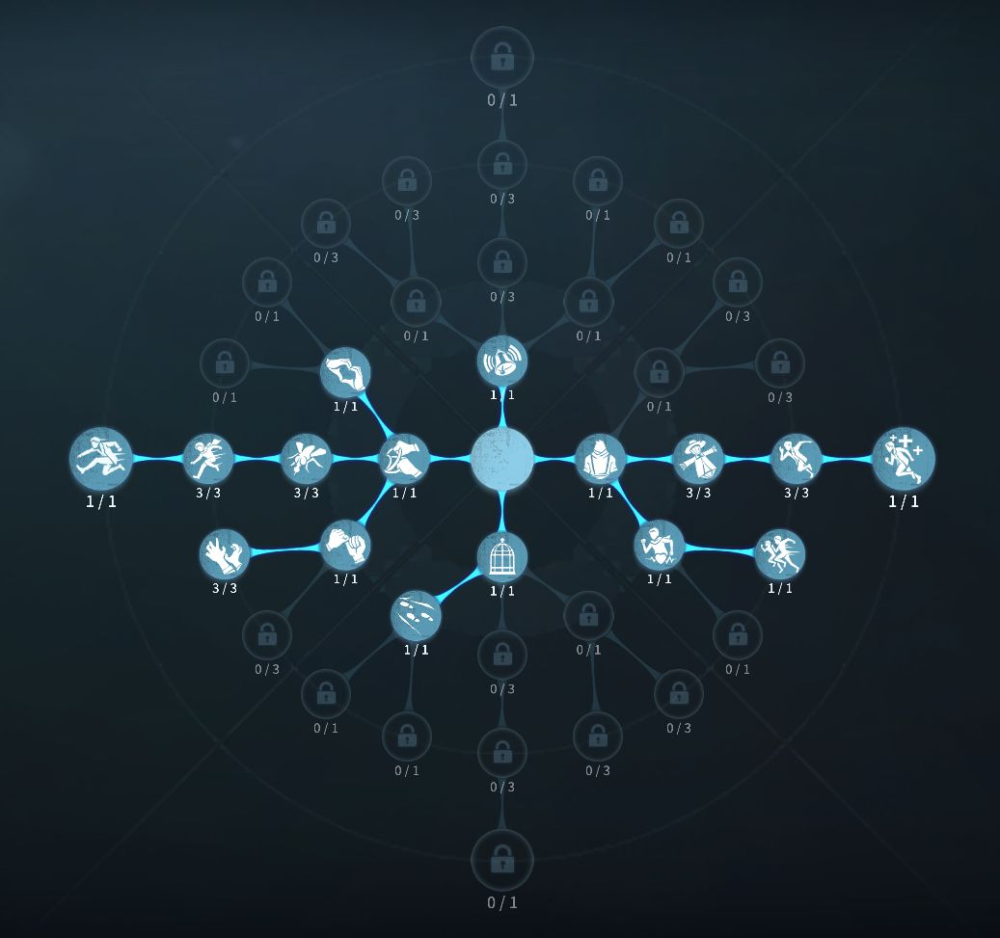

幸運児の評価
幸運児は好きなアイテムを高確率で入手できるサバイバー！
外在特質と特徴
特質1:幸運の包み
ゲーム開始時に幸運の包みを携帯しており、使用すると獲得したいアイテムを表記の確率で即座に入手できる。特質2:幸運児
・幸運児はアイテムを2種類持つことができる。・箱を開けるときに欲しいアイテム願うことができ、願うことでほしいアイテムが出る確率が上がる
・願ったアイテムが出なかった場合次の願いが必ず叶う
・25.3m以内の箱の位置がわかり、箱を開ける速さが40％上がる
・願いによって獲得できるアイテムには上限数がある
・幸運児が箱を開ける度に次に箱を開ける時間が3.5秒に増加する。
特質3:荘園旧友
・被ダメ後の加速する時間が２秒に延びる特徴
幸運児は箱や幸運の包みから
医師の注射器、弁護士の地図、庭師の工具箱、冒険家の本、
マジシャンのステッキ、泥棒のライト、空軍の信号中、傭兵の肘当て、
調香師の香水、オフェンスのボール、機械技師のパペット、一等航海士の懐中時計
を選択して獲得することができる。
医師の注射器、弁護士の地図、庭師の工具箱、冒険家の本、マジシャンのステッキ、
を選択すると100％で獲得できる
泥棒のライト、空軍の信号中、傭兵の肘当て、調香師の香水、
オフェンスのボール、機械技師のパペット、一等航海士の懐中時計
を選択すると50％で獲得できる。
もし50％が外れてしまった場合次の抽選はすべて100％になる！
基本的な立ち回り方
1. 追われた時
幸運児のアイテム選択は個性が出る。
追われると分かった場合、冒険家の本で隠密をするひと
信号銃、ボール、懐中時計などのチェイスアイテムでチェイスをするひと
何回かためして、自分にあったファーストチェイスにしよう！
信号銃が無難です！
2. 追われない時
解読に専念しよう。 機械技師のロボットをだして暗号機の引継ぎやゲート前待機、中間待機、耳鳴り要因にさせると良し！
おすすめの内在人格
フライホイール型人格
この内在人格は、観客効果で一台目を確実に上げることができ、負傷してからも板、窓乗り越えが早く、粘着チェイスにも強い

膝蓋腱反射型人格
この内在人格は、膝蓋腱反射で距離を取り、もがきをワンちゃん成功狙う！


みんなのコメント